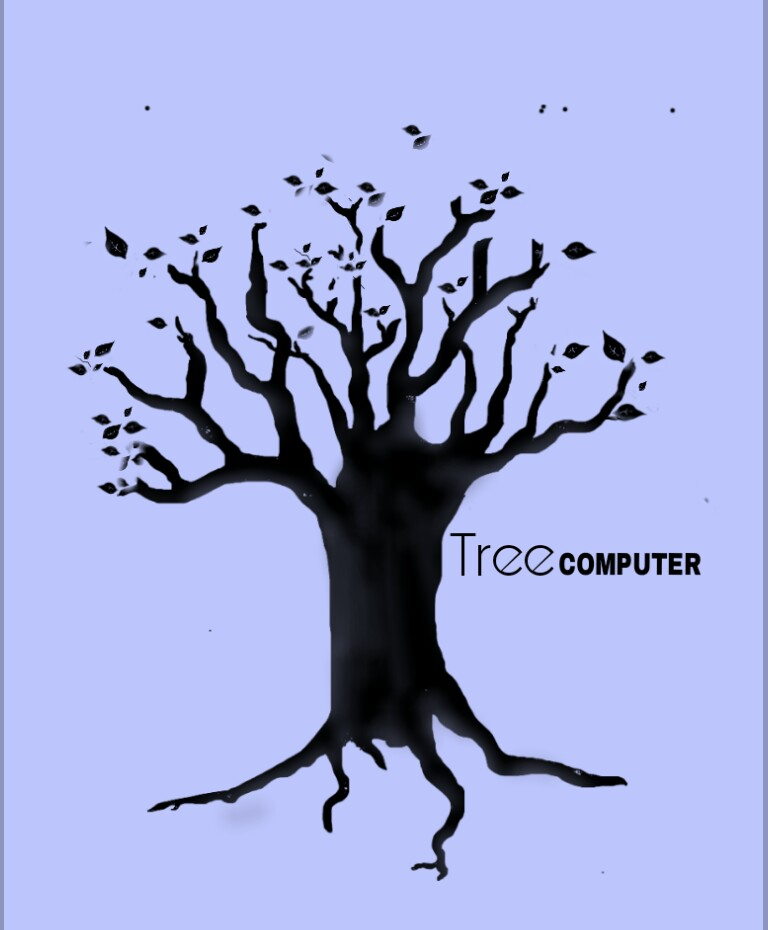

Tree Computers
Tree Computers

"Su satisfaccion son nuestros frutos"
Tree computers es una mesa de ayuda destinada a la Ayuda, Asesoria, Reparacion, Configuracion etc
de los equipos de computo del personal docente del plantel asi como tener la Satisfaccion y la Aprobaccion del mismo
Duarante el transcurso de este proyecto se quiere alcanzar los siguientes objetivos:
Ser una empresa de ayuda organizada que pueda hacer el mejor manejo y mantenimiento
de los equipos de computo logrando la satisfaccion del personal del docente
Alacanzar el reconocimiento de los medios como una excelente mesa de ayuda, siendo ameritados por los trabajos y servicios
Lograr que el personal de docente adquieran seguridad, confianza, comodidad y aprecio por esta mesa de ayuda "Tree Computers"
poniendo en practica los valores y principios que nos caracterizan
Usar todos los medios y conocimientos estudiados, para evitar fallas, malentendidos y daños al reparar, solucionar, configurar, etc, un equipo de computo y asi evitar
una mancha al historial de la mesa de ayuda
Impactar de forma positiva a los medios, dejando en claro el lema de la mesa de ayuda y dar realze a la especialidad de soporte y mantenimiento de equipo de computo o promoviendo
y realizando trabajos y servicios de calidad
Para mayor informacion puedes preguntar en nuestro correo: Tree.Computers1@gmail.com